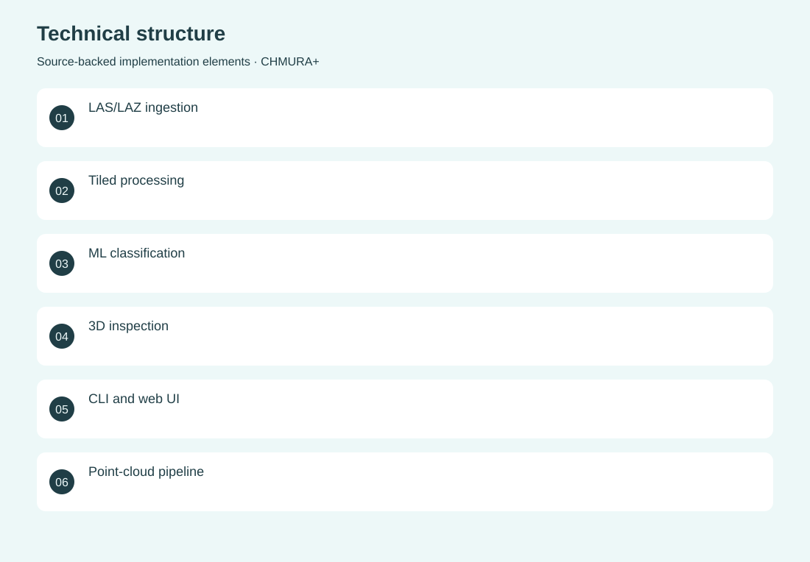
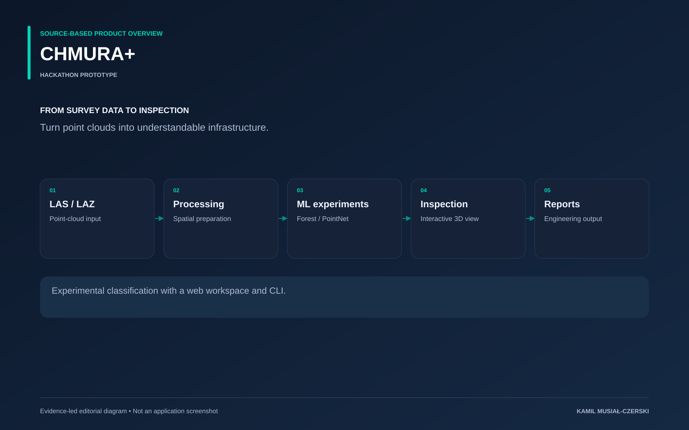

The project
The prototype exposes the same processing capabilities through a visual workspace and a command-line interface. Its pipeline handles LAS/LAZ inputs, spatial processing and experimental classifiers, then returns inspection views and reports. This makes the relationship between raw survey data and derived infrastructure information visible during a time-constrained hackathon demonstration.
The problem
Raw point clouds are difficult to inspect and translate into useful engineering information.
The solution
A Streamlit interface and CLI expose classification, visualization and report generation.
My contribution
Contributed to the point-cloud processing pipeline, interactive analysis interface and hackathon demonstration.
AI capabilities
Point-cloud classification; Random Forest and PointNet experiments
Technical structure

Product overview

The portfolio cover is an editorial illustration. No live product screenshot is presented for this project.
Showcase assets
{kind=link}
{kind=link}
{kind=link}
Existing product identity. Newly designed marks are portfolio treatments, not claims of official client branding.